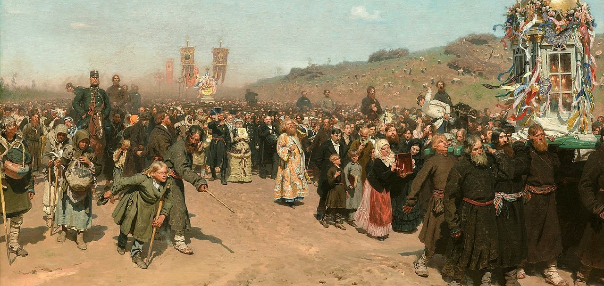

EXTRA INFORMATION
Pro-Independence Movements
Pro-independence movements in the Russian Civil War within the territory of the former Russian Empire sought the creation of independent nation states that were not aligned with the Bolsheviks after the October Revolution. Many pro-independence movements emerged after the dissolution of the Russian Empire and fought in the Russian Civil War. Some include Finland, the Baltics, Ukraine, and Crimea.
Revolutionary Mass Festivals
Revolutionary Mass Festivals were participatory, staged cultural events held in the Soviet Union. They were held during the period of the Russian Civil War following the October Revolution of 1917. Experimental in nature, they united the Leninist ideology of re-education of the masses and the aesthetics of the Russian avant-garde. The revolutionary mass festivals were built upon the tradition of fairs and carnivals, and were part of the subsequently institutionalized public holidays and their official celebration in the Soviet Union. In contrast to these earlier versions of public festivals, the early revolutionary mass festival were often produced ad hoc without a distinct guideline. However, they became crucial events in the active construction of historical myths.
Nikolayevsk Incident
The Nikolayevsk incident was a series of mass killings that took place in the region of Nikolayevsk-on-Amur during the Russian Civil War. The massacre and terrorism perpetrated by the Red Army under Yakov Tryapitsyn (a group of Russian Bolshevik-anarchist, Chinese and Korean guerrillas led by Ilya Park) killed thousands of Russians in Nikolaevsk and devastated the region.
